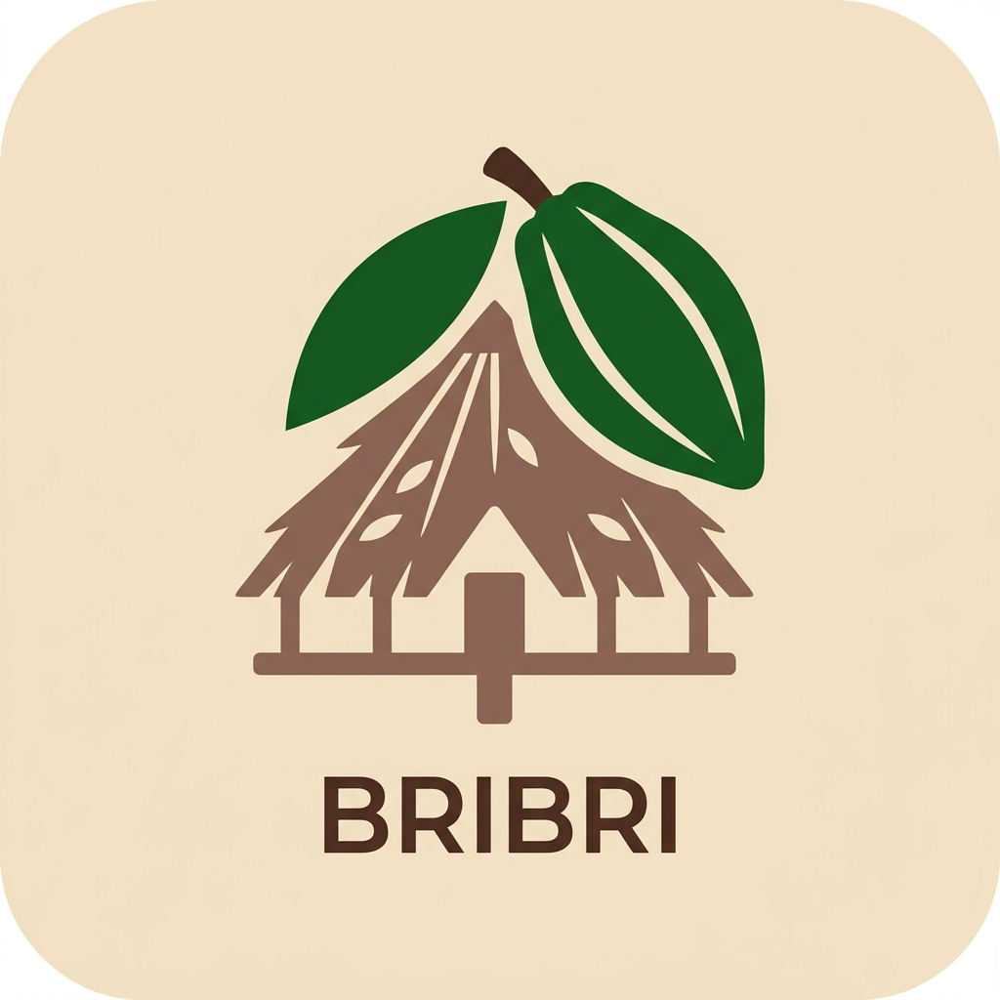

Discover the language of the Bribri people
Enter a word to start translating
The Bribri language uses a Latin alphabet with special diacritics to indicate tones and unique sounds.
í
à
ã
Bua'
Help us grow the dictionary! Submit a new word or phrase, and it will be reviewed before being added.